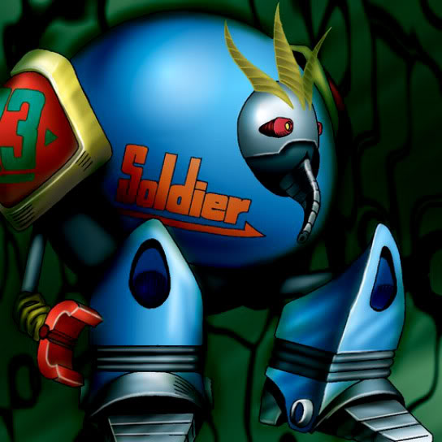

Cyber Soldier

STATS
ATK: 1500
DEF: 700DECK COST
Deck Cost per Card: 22Fusion List (7 Possible Fusions)
- Cyber Soldier + Air Marmot of Nefariousness = Dice Armadillo
- Cyber Soldier + Dig Beak = Dice Armadillo
- Cyber Soldier + Mystical Sheep #2 = Dice Armadillo
- Cyber Soldier + Synchar = Dice Armadillo
- Cyber Soldier + Tomozaurus = Cyber Saurus
- Cyber Soldier + White Dolphin = Metal Fish
- Cyber Soldier + Wicked Dragon with the Ersatz Head = Metal Dragon